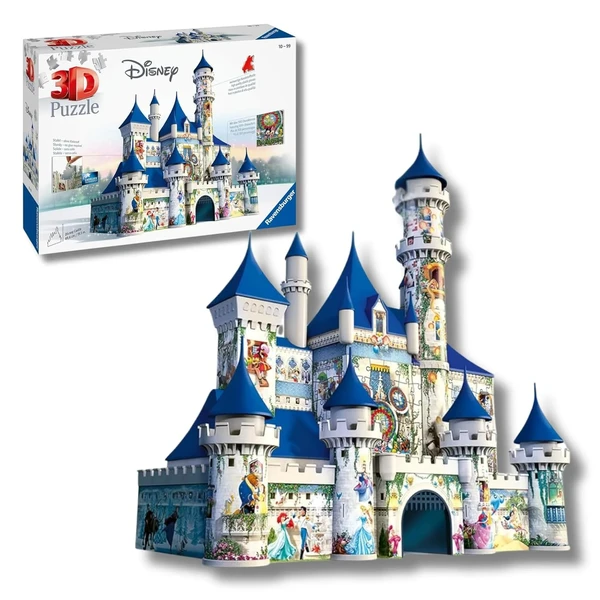
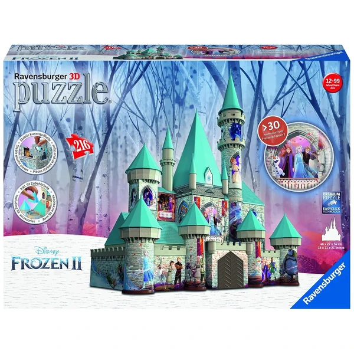

✨ Guía especial
Puzzle 3D del Castillo de Disney y Frozen
El modelo principal, Frozen y dónde comprarlos
El modelo principal, Frozen y dónde comprarlos
El puzzle 3D de Disney se concentra sobre todo en un modelo: el Castillo de Disney, la réplica de la icónica fachada del parque temático. Frozen aparece como segundo tema dentro de la licencia, con menos presencia propia. En esta guía repasamos ambos, la marca de referencia, y dónde comprarlos.
El Castillo de Disney es el modelo dominante dentro de esta licencia, siendo, con diferencia, el más habitual dentro de esta licencia. Reproduce la fachada y las torres del castillo tal como se reconoce en el logo de la compañía, con un nivel de detalle y número de piezas que varía según la versión — desde modelos compactos pensados para los más pequeños hasta réplicas de mayor tamaño para un montaje más elaborado.

Castillo Disney Ver en Amazon →Frozen aparece como segundo tema dentro de la licencia Disney en formato 3D, aunque menos habitual de forma individual que el Castillo. Suele fabricarse como figura o escena reconocible de la película, en un formato más compacto que el Castillo — buena alternativa si el destinatario del regalo tiene preferencia por Frozen en concreto en vez del castillo genérico de la marca.

Frozen Ver en Amazon →Igual que en la mayoría de licencias de esta categoría, Ravensburger es la marca dominante para el puzzle 3D de Disney: tiene la licencia oficial tanto del Castillo como de Frozen, con el acabado de pieza más detallado del catálogo. No hay una alternativa real de otra marca con presencia relevante en este catálogo, así que la elección aquí es más sencilla que en Torre Eiffel o Big Ben, donde competían varias marcas.
Tanto el Castillo como Frozen se encuentran principalmente en Amazon, donde hay más variedad disponible de forma constante que en tienda física.
El Castillo de Disney, con diferencia — concentra la mayoría del interés dentro de esta licencia.
Ravensburger, con licencia oficial tanto del Castillo como de Frozen, sin competencia real de otra marca con presencia relevante.
Sí, suele ser una figura o escena reconocible de la película en formato más compacto, frente a la réplica arquitectónica del Castillo.
Principalmente en Amazon, con la disponibilidad más constante.
Todos los tipos, materiales, marcas y modelos según la edad.